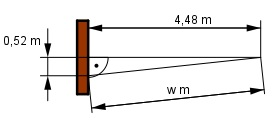

Pythagoras Aufgabe 13 Bei einem Wettkampf springt ein Mädchen 0,52 m neben der Mitte des Weitsprungbalkens schräg ab. Es wird von der Mitte des Balkens aus eine senkrechte Weite von 4,48 m gemessen. Wie groß war die Sprungweite w des Mädchens in m tatsächlich?

w2 = 0,522 m2 + 4,482 m2 = 20,34 m2 |√ w = = 4,5 m